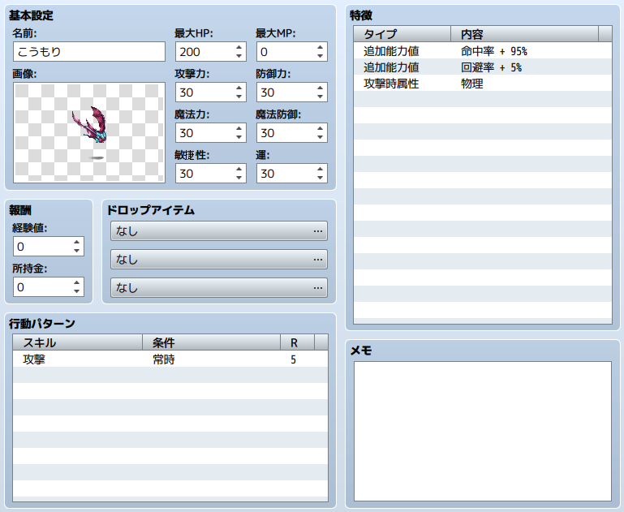
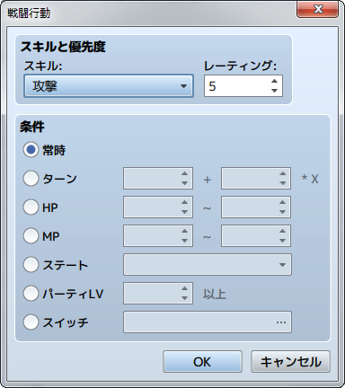

敵キャラの設定
データの役割
プレイヤーが戦う敵役のキャラクターを表現するデータです。敵キャラには、アクターと同様の能力値のほか、戦闘中の行動パターンを設定します。
設定項目の内容

基本設定
名前
敵キャラの名前です。名前が長いとプレイ画面ですべて表示されない場合があります。
画像
バトル中に表示される敵キャラの画像です。ダブルクリックすると開く［画像の選択］ウィンドウで画像ファイルを指定します。指定時、［色相］のスライダーを移動させると、画像の色合いを変更できます。［（なし）］の場合、画像を表示しません。
最大HP／最大MP／攻撃力／防御力／魔法力／魔法防御／敏捷性／運
バトル開始時の敵キャラの能力値です。［最大HP］は1～999999、［最大MP］は0～9999、これら以外は1～999の範囲で指定します。
報酬
パーティがバトルに勝利したときに獲得する経験値（1～9999999）、お金（0～9999999）です。
ドロップアイテム
パーティがバトルに勝利したときに獲得するアイテム（武器、防具を含む）です。欄内をダブルクリックすると表示されるウィンドウで対象のアイテムを指定し、獲得する確率を［出現率］（1／1～1／1000）に指定します。
行動パターン

- ターン
- 経過したターン数を条件とします。Aを戦闘開始からのターン数、Bを周期ターン数とし、［A＋B×X］の式で定義します。Aに2、Bに3と指定した場合、2ターン目から3ターン経過するごと（5ターン目、8ターン目…）に条件を満たします。
- HP
- 敵キャラのHPの値を条件とします。最大HPに対する割合の範囲（0～100％）を指定します。HPが指定範囲にあるとき条件を満たします。
- MP
- 敵キャラのMPの値を条件とします。最大MPに対する割合の範囲（0～100％）を指定します。MPが指定範囲にあるとき条件を満たします。
- ステート
- 敵キャラに指定したステートが付与されていることを条件とします。
- パーティLV
- パーティメンバーのレベルを条件とします。パーティメンバーの中で一番高いレベルが指定値以上のときに条件を満たします。
- スイッチ
- 指定したスイッチを条件とします。そのスイッチがONのとき、条件を満たします。
特徴
敵キャラの特徴です。設定欄の各行をダブルクリックして表示されるウィンドウで内容を定義します。詳細は［特徴の設定方法］を参照してください。
メモ
ゲーム作成中のメモ書きに使えます。
行動パターンの採用ルール
［行動パターン］に設定した行動のうち、戦闘中に採用するものは以下のルールに沿って決まります。
- 設定した行動から条件を満たすものを拾い上げます。条件を満たす行動がひとつもない場合は行動を起こしません。
- 条件を満たす行動のうち、最大の優先度をもつもの、最大優先度との差が2以内の優先度をもつものを採用候補とします。
-
採用候補のうち、最大優先度との差が1と2の行動については、それぞれの採用確率を最大優先度の行動の2/3、1/3とします。同じ優先度の行動が複数あるとき、それぞれ採用確率は同じになります。
- 【例1】行動の優先度が［5］［5］のとき
- それぞれ50％になります。
- 【例2】行動の優先度が［6］［5］［4］［3］とき
- ［6］が50％、［5］が33.3％（50％の2/3）、［4］は16.6％（50％の1/3）になります。［3］は候補になりません。
- 【例3】行動の優先度が［5］［3］［3］のとき
- ［5］が60％、［3］はそれぞれ20％（60％の1/3）になります。
- 候補になった行動の採用確率のもと、乱数で採用する行動を決定します。